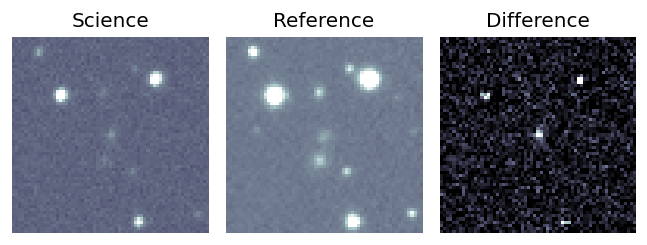
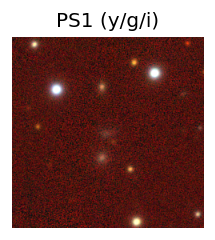
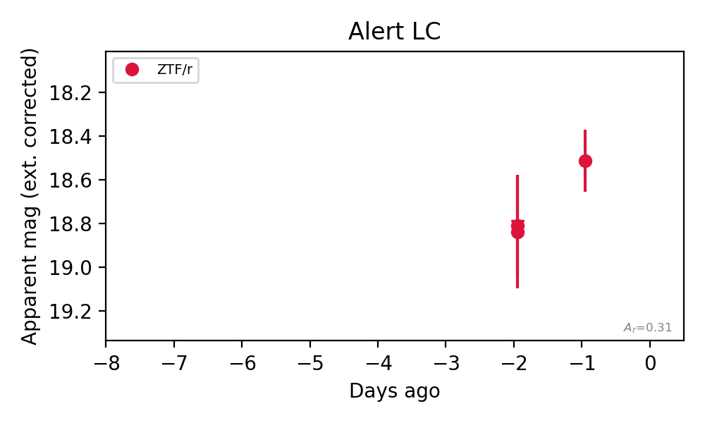

Candidate List 20260827Last night — ZTF: 553 passed basic cuts (11 young) · LSST: 0 passed basic cuts (0 young)Previous Day Next Day
Section 1: New Sources (age<1d) Section 2: Old (1-5d) sources observed last nightplaceholder
Section 2: Older Sources Observed Last Night (2)
0. [ZTF] ZTF26abqhtiz (FBOT?) [Back to Top] [Share] [Trigger Swift] [Fritz Alert] [Fritz Source] [Lasair]RA, Dec: 25.61237, 5.93216 1h42m26.97s, 5d55m55.77sGalactic (l, b): 145.27027, -54.71199 WARNING: -4.37 deg from ecliptic plane ext(g-r) = 0.064


TESS: Sectors [42 43 70]
SDSS (<15 kpc):Found SDSS phot-z: z=0.10; peak abs mag = -19.17
PS1: 0 sources in 3 arcsec
LegacySurvey: 1 sources in 3 arcsec Closest: d = 3.30 arcsec, 310.3 deg (east of north) photoz=0.12 (68% bounds 0.09, 0.14), type=SER peak abs mag (ext. corrected) = -19.58 (68% bounds -18.9, -20.05)

Extinction-corrected gr color:
From alerts: -0.05 +/- 0.25 mag
Extinction-corrected gi color:
From alerts: -0.24 +/- 0.25 mag
Extinction-corrected ri color:
From alerts: -0.19 +/- 0.22 mag
Consistent with synchrotron, g-r>0!
Rise Rate:
g: 0.26 mag/day
r: 0.17 mag/day
i: 0.05 mag/day
Fade Rate:
1. [ZTF] ZTF26abqzkbw (FBOT?) [Back to Top] [Share] [Trigger Swift] [Fritz Alert] [Fritz Source] [Lasair]RA, Dec: 109.33639, 5.34097 7h17m20.73s, 5d20m27.49sGalactic (l, b): 211.10072, 8.18683 ext(g-r) = 0.144


TESS: Sectors [ 7 33 87]
PS1: 1 source in 3 arcsec Closest: d = 1.20 arcsec photoz=0.11+/-0.04 peak abs mag = -20.07
LegacySurvey: 0 sources in 3 arcsec

Rise Rate:
r: 0.3 mag/day
Fade Rate: